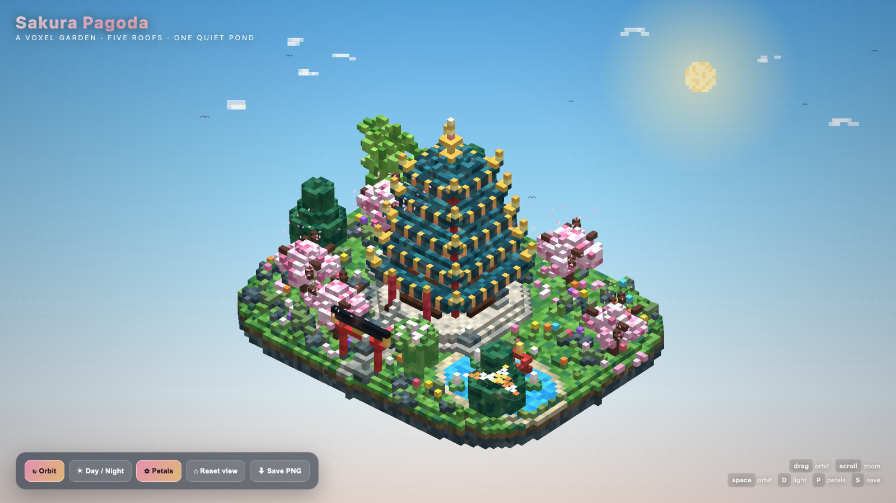

26 November 2026 · Agentic scene · voxel garden
Voxel Pagoda Garden · Hy4-Flash · Sushi 1.8.0 · Pi · default settings, temperature 0.9
Completed: a self-contained 37,051-byte HTML file with its own WebGL voxel renderer (no libraries) showing a pagoda on a floating island with cherry trees, a koi pond, a torii gate, a sun and clouds, and day/night lighting. The five roofs run together into one stepped cone.

What was checked
- Pi ended with stopReason stop after 43 requests; all 43 matched Sushi summaries one to one, with temp=0.90 on each.
- Opened after the run in headless Chrome 158 at 1600x900: the scene renders, with no console errors.
- The model checked its own work with headless Chrome screenshots that it read back as images (12 image reads).
- The archived demo is byte-identical to the file the run wrote (37,051 bytes).
Configuration
The model, serving engine and agent used for this execution.
| Field | Value | Detail |
|---|---|---|
| Model · primary | Hy4-Flash · primary · reasoning Pi medium, sent to the model as high with a 16,384-token thinking budget | Sushi STQ 2.25 bpw (routed experts EXL3) |
| Checkpoint · primary | Hy4-Flash-Sushi-STQ-2.25bpw | primary model artifact · revision capture-cf5ac35088b7 |
| Runtime | Sushi 1.8.0 · MLX 0.32.3 · OpenAI-compatible server as the workstation's usual launcher starts it: --ctx-size 262144, --max-tokens 16384, --ssd-budget-gb 48 with every routed expert resident; everything else Sushi's default for Hy4: temperature 0.9 from the pack's generation_config.json, 8-bit KV cache, 4096-token prefill chunks, prefix cache on SSD only (20 GB), DFly2 drafts at depth 1 to 6, vision on; one request at a time. Warm: model load and warm-up finished before the session started. mode | inference engine and exact build |
| Harness | Pi coding agent 1.6.0 | the agent or client that drove the run |
| Hardware | Apple M5 Pro · 64 GB unified memory | hardware recorded for this execution |
| Workload | Voxel Pagoda Garden · revision 1 | The same prompt as the 2026-09-29 Qwen 3.8 Flash Next run, byte for byte, sent once to Pi in print mode in a new empty folder. prompt_tokens counts every request's full prompt, cached or not. |
| Context window | 262,144 tokens | maximum context configured for the serving runtime |
| Repetitions | 1 | executions recorded for this workload; one means an indicative result, not an estimate |
Inference measurements
Engine-side rates for this run. Each figure states its own statistic; figures from different runs are not interchangeable.
| Metric | Value | Definition |
|---|---|---|
| Cache hit ratio | 96.7 % | cached input tokens / presented input tokens · n=43 · 1,742,743 of 1,802,238. |
| Decode · output-weighted | 31.98 tok/s | total output tokens / total decode time (sum of each request's output tokens / its decode rate) · n=43 · The mean of request rates weighted by output tokens, the statistic the 2026-09-29 Qwen record gives under this name, is 32.59. |
| Decode · median | 36.6 tok/s | median across requests · n=43 · Range 25.6 to 46.6. |
| Prefill · median | 288.7 tok/s | median across requests, as Sushi reports it, cached input included · n=43 · Range 41.1 to 478.4. |
| Draft acceptance | 75.11 % | accepted DFly2 draft tokens / drafted tokens from the Sushi spec-stats line of each matched request · n=43 · 22,452 accepted of 29,892 drafted. DFly2, not MTP: not the same measure as the Qwen run's MTP acceptance. |
Agent session counters
Agent-wide usage totals. These include reasoning, tool calls and waiting, and are not model decode speed.
| Metric | Value | Definition |
|---|---|---|
| Session elapsed | 33.0 min | Pi session start to final reply; the prompt went out 0.1 s after the start · n=1 |
| Model requests | 43 requests | total · n=1 |
| Tool calls | 43 calls | total · n=1 |
| Context compactions | 0 compactions | total · n=1 |
| Responses stopped at the output limit | 1 requests | replies that stopped at the 16,384-token output limit · n=43 · Request 4: its tool call was cut off and not run, and the model wrote the file again in the next request. |
| Image tool calls | 12 calls | read calls that returned a screenshot of the page as an image · n=1 |
Context and token counters
Token totals as reported by the harness or engine. Cached and cumulative figures are not additive with fresh input.
| Metric | Value | Definition |
|---|---|---|
| Final prompt context | 61,368 tokens | final request · n=1 |
| Output tokens | 52,916 tokens | total of Pi's per-request output counts · n=43 |
Request records & provenance
Numeric per-request measurements only, matched one to one to Sushi's per-request summaries by (prompt total, output, cached). The mtp_* fields hold Sushi's DFly2 spec-stats: attempts, accepts, drafted and per_draft_pct. Prompt and response content, stop reasons, session identifiers and local paths are excluded.
Run ID: 2026-11-26-hy4-flash-sushi-v180-225bpw-pi-pagoda-garden-temp09
One execution, with checks transcribed from the retained record. A completed session is not a quality score. Measurement method · All runs